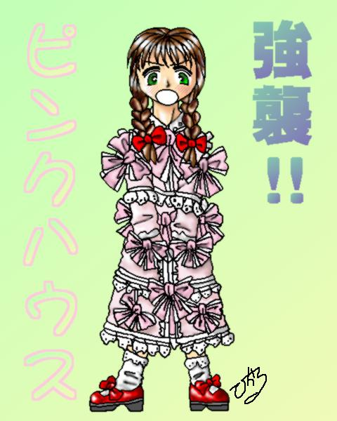

| DEDICATED STORIES | CONTRIBUTER | RECOMMEND |
|---|---|---|
| ピンクハウスは魔法のお洋服 | もと(ＭＯＴＯ)さん | 変身に合わせて尚樹のセリフの色が変わるあたり、芸が細かいです。 |
| 強襲！ ピンクハウス | 真城 悠さん | うわ〜（笑）。このシュールさは、まさに真城さんも仰るようにモダンホラーです。 |
| 初登校の朝(TYPE B) | KAZEさん (Homepage) | こちらは、レンタルボディの設定を利用したSS。主人公が、目を覚ますと女の子になってた、という展開はやっぱりいいですね〜。改訂第２版です。 |
| 戦え！ ピンクハウス | 水谷秋夫さん | 私の「ベロクロン」云々というたわごとがめぐりめぐって、こんなストーリーに！ 大伴昌司さんも大絶賛です（きっと）。思いがけず第２期ウルトラのファンにはくすぐり満載なパロディでした。 |

|
描けそで描けないピンクハウスです。 疲れました。 しばらく描きません。 |